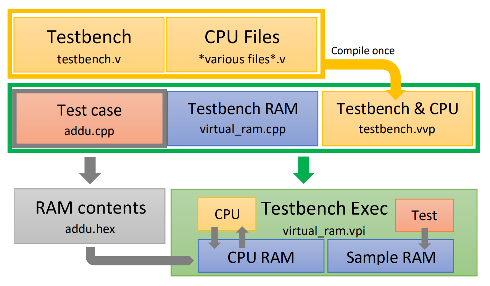
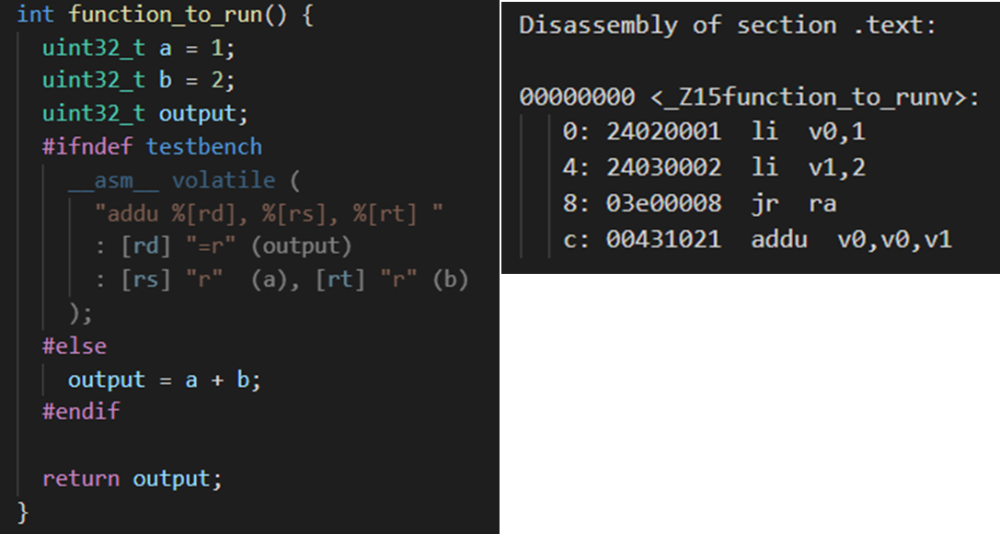

MIPS Testbench Project
Overview
This was a group project to design both
My role was to design a testbench to test 36 Arithmetic and Load-Store instructions.
Design Decisions
The testbench is expected to make memory available to the CPU using the Avalon memory protocol, which will allow the CPU to access instructions from memory as well as read and write data. The testbench also has access to the value of register v0 used to return values (based on the MIPS C ABI). Hence the testbench may use both the return value and memory contents to determine if an instruction was correctly implemented or not.
The general expectation for this coursework is that the tesstbench would be written in Verilog and would instantiate the top level module of the CPU to run tests. However, this makes writing individual tests cumbersome and limits how the tests can be written.
Hence, I decided to use the Verilog Procedural Interface (VPI) to allow my Verilog testbench to call C++ code. This code is then compiled and later linked with the Verilog simulatior compiled by Icarus Verilog.
Implementation
My testbench implements a virtual ram using a C++ hash map. This makes all 228 word addresses available to the CPU under test while minimizing resource usage, which would be difficult without VPI. 36 different testcases corresponding to each instruction being tested were written in C++. These are linked one at a time with the rest of the testbench and run to test each instruction. An oversimplified example of a testcase is shown below
The code shown has an if else macro to either inject MIPS inline assembly with the desired instruction, or simply perform the operation with C code.
The code shown is actually run twice: Once on the CPU under test with the inline assembly instructions, and once on the host x86 machine running the testbench. Each writes to a separate RAM which is then compared at the end to determine if the test passes.
In reality, each of the 36 arithmetic, load and store test cases tests each instruction with at least 10,000 unique values. These numbers are either generated on the fly using Fibonacci logic, or in the case of immediate values, are inserted during compilation. Edge cases are considered separately. Every test case makes the CPU execute between 30,000 and 164,000 instructions. Hence across the testbench, a total of 360,000 inline assembly instructions are executed, out of over 3.1 million instructions executed in total.
Feedback
Written Instructor Feedback:Approach to testing with VPI is very interesting, plus the sheer number of test cases was impressive (as a number). Makes the testing section stand out.Anonymous Peer Feedback:
Takes initiative to organise meetings and set goals. Lots of effort put into his part of the work and conveys what he has done clearly to others. Willing to help out wherever needed promptly as well.